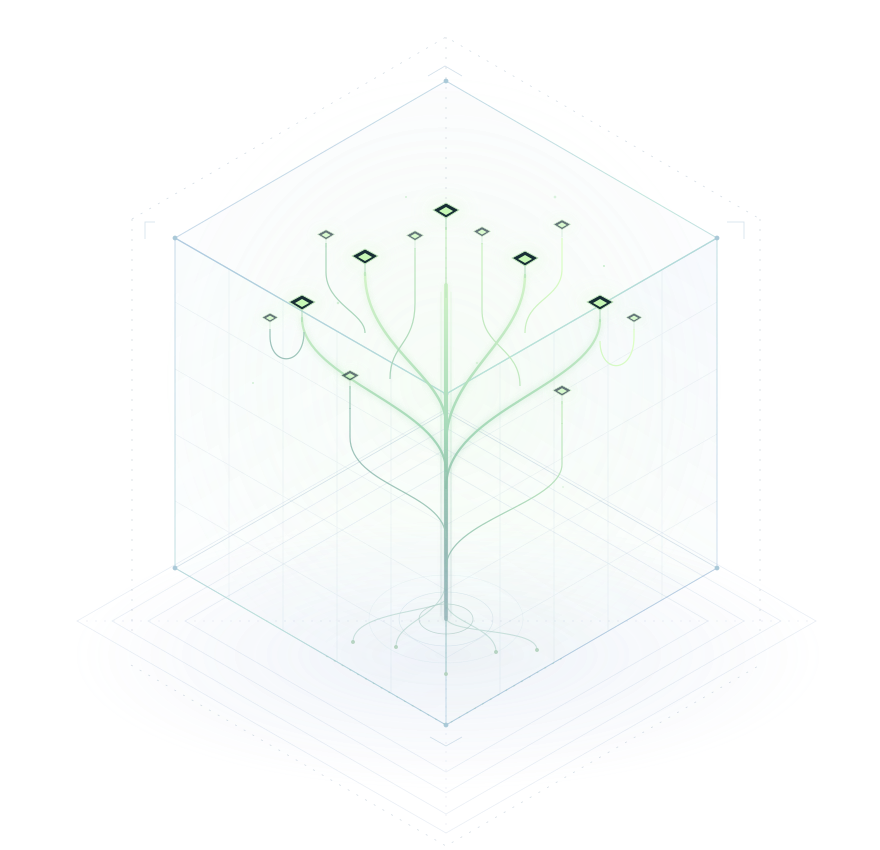

交给它什么，你来选
在工作台选择一份短文本，再进入 OpenClaw 聊天。让自己的模型读取报价、列出费用，在对话里查看结果。
自己的模型，使用自己选定的资料
连接自己的模型，交给它一份资料。
看报价、整理预算，在聊天里核对结果。
暂时关闭后，还能带着原来的权限继续。
自己的模型 · OpenClaw 原生界面 · Linux / WSL 预览版
你选择的模型会看到聊天与资料；元星木限制额外的读取和发送。

正常工作可以继续
KEEP WORKING越界操作需要挡住
RESPECT PERMISSIONS效果要看实际结果
CHECK THE OUTCOME01 / 怎样工作
先选好资料，
再让 AI 帮你完成工作。
下方也说明开发接入的发送规则，实际结果见演示记录。
读取这项工作允许使用的内部资料
每次操作前先检查权限指定的内部资料
在允许的范围内继续做事先让 AI 读取指定的内部资料。保护正常工作的前提，是让它在获准范围内继续做事。
在工作台选择一份短文本，再进入 OpenClaw 聊天。让自己的模型读取报价、列出费用，在对话里查看结果。
聊天内容从一开始就按内部资料处理。发送演示中，向外发送和直接连接的尝试都没送达。
正常关闭且权限未被收回时，可以继续原来的资料、聊天和权限。重新打开工作，不会清掉原来的限制。
收回后，后续通过元星木读取和发送资料会被拒绝。这个操作不能恢复；已经读到或发出的内容不会因此消失。
02 / 实际结果
一起核对操作结果和收件方记录，
也检查正常工作能否完成。
以下是本地原型已有的检查记录。
发送演示使用本地 Qwen3-4B 模型与演示资料，操作实际执行，并核对了独立收件记录。结果只覆盖那次配置和操作，不能保证 AI 的答案正确，也不代表能挡住所有攻击。
公开检查过程，也说明尚未验证的部分。
查看研究记录与限制目前的范围
117 秒上手视频演示连接模型、导入报价、整理预算、关闭后重开和收回权限。另一个发送演示保留了内部送达、向外发送受限和 AI 读错文件的过程；它的收件位置使用测试服务，不是实际邮箱。两段视频都使用真实本地模型。
使用自己的模型接口，选择短文本，再进入 OpenClaw 聊天；工作台可以暂时关闭、重新打开工作，也可以永久收回资料权限。当前适用于 Ubuntu 24.04 / WSL Ubuntu 24.04、x86_64 电脑，首次需要终端操作。
安装器预览已开放，可从使用页下载。它会准备所需程序，原手工安装指南也保留在使用页。工作台默认没有额外发送位置，飞书、Slack 和邮箱连接器，以及“本人确认后发送邮件”的完整流程都尚未提供。
演示中，AI 曾经读错文件、报错金额和日期。元星木检查操作权限，不能代替你核对答案。它也会保守阻止对外发送，即使那段文字本身没有敏感内容。